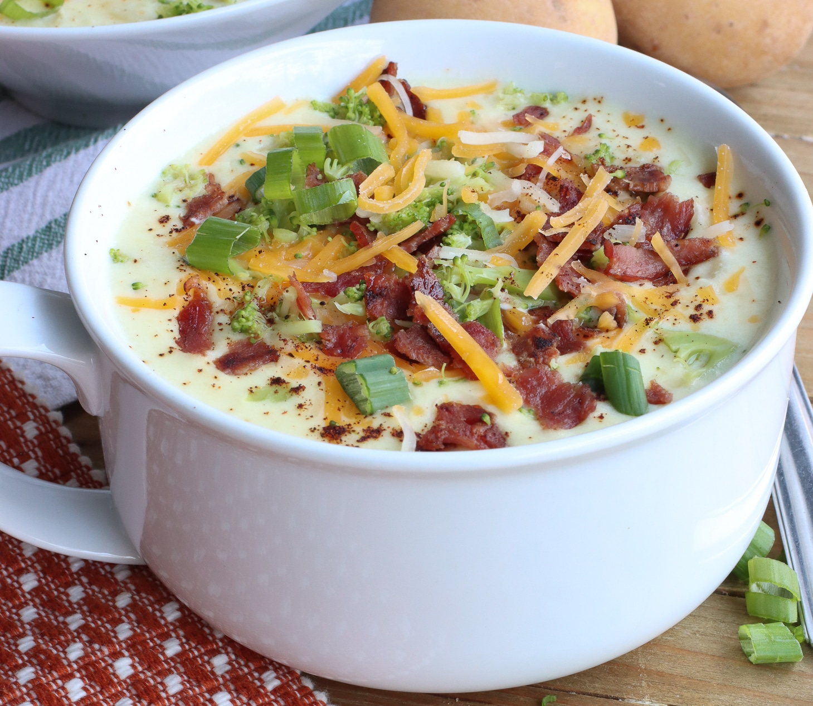

Description
Baked potato soup is a dish that we typically make here at my
house on those chilly Autumn nights. It is a simple and cost-effective
way to make a filling meal that is guaranteed to be loved by all.
Ingredients
- 10-11 Medium to Large Sized Russet Potatoes
- 1/4 Teaspoon Salt
- 16 Slices of Bacon
- 1 Large Yellow Onion
- 6 Cloves of Garlic
- 2 Tablespoons of Butter
- 1/4 Cup Flour
- 3 1/2 Cups Chicken Broth
- 2 Cups Half and Half
- 1/4 Cup of Sour Cream
- 1/2 Teaspoon of Black Pepper
- 2 Cups of Shredded Cheddar Cheese
- 1 Bundle of Fresh Chives
- Onion Powder
- Garlic Powder
Directions